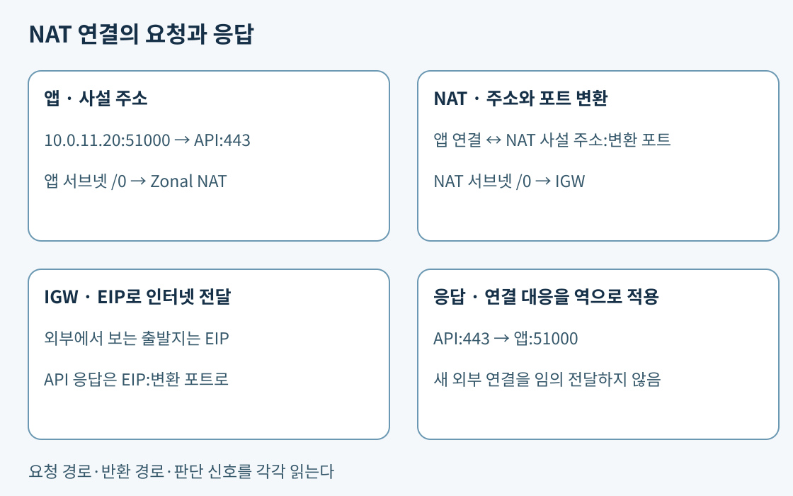
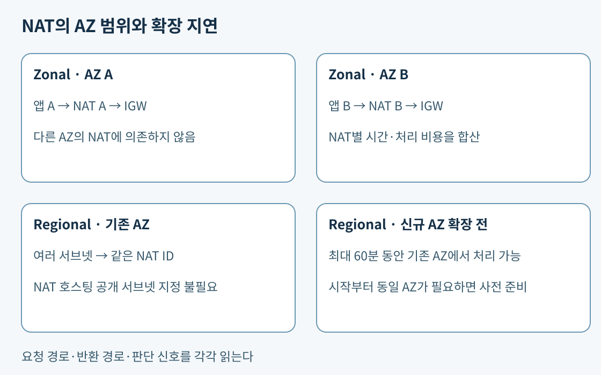

4일 차 본문 · 5일 차 연결 통제 · 6일 차 요청 분산
핵심. 패킷은 네트워크에서 옮기는 데이터 조각이다. TCP는 패킷의 순서와 재전송 등을 관리해 연결을 제공하는 전송 프로토콜이고, UDP는 연결 설정 없이 데이터그램을 보내는 전송 프로토콜이다. IP가 컴퓨터의 네트워크 주소라면 포트는 그 컴퓨터 안에서 통신하는 프로그램의 접점을 구분하는 번호다. HTTPS 서버의 TCP 목적지 포트는 보통 443이다. 클라이언트는 여러 연결을 구분하려고 출발지에 임시 포트를 고른다. 같은 TCP 443 요청이어도 출발지 주소·포트가 다르면 별도 연결이다.
예를 들어 앱 10.0.11.20:51000이 외부 API 203.0.113.80:443에 요청한다. 여기서 문서용 외부 주소는 실제 API를 뜻하지 않는다. 요청의 출발지는 앱, 목적지는 API다. 응답은 203.0.113.80:443 → 10.0.11.20:51000으로 방향이 바뀐다. 목적지 포트도 443에서 51000으로 바뀐다. 따라서 “HTTPS니까 왕복 모두 목적지 443”이라고 생각하면 반환 통신을 막기 쉽다. TCP 연결은 IP 두 개·포트 두 개·프로토콜의 조합으로 구분해서 읽는다.
라우팅 테이블은 목적지 IP 범위를 비교한다. 보안 그룹은 프로토콜·포트·출발지/목적지를 검사한다. TCP는 애플리케이션이 응답할 때까지 기다릴 수 있으므로 응답 경로가 끊기면 요청 패킷이 도착했어도 연결 시간 초과가 난다. 이런 현상은 IAM의 API 거부와 구분해서 조사한다. AWS VPC 트래픽과 경로, 보안 규칙의 프로토콜과 포트.

핵심. IPv4는 32비트다. CIDR의 /n은 앞에서 고정한 비트 수이므로 주소 수는 2^(32-n)이다. /24는 256개, /26은 64개다. 10.0.8.0/24를 /26 네 개로 쪼개면 시작 주소는 .0, .64, .128, .192다. 10.0.8.64/26의 마지막 주소는 .127이다. 이 계산은 “IP 50개면 /26이면 되겠지”에서 멈추지 않게 해 준다. 일반적인 AWS IPv4 서브넷의 예약 5개를 제외하면 /26은 59개이며 ALB·엔드포인트 ENI·장애 때 추가할 서버까지 같은 주소 예산을 쓴다.
ENI(Elastic Network Interface)는 리소스가 VPC에서 통신할 때 쓰는 가상 네트워크 인터페이스다. 주소를 서버 수에만 맞추면 인터페이스 추가나 교체 중의 임시 중복 배치가 막힌다. VPC가 10.0.0.0/16이고 AZ A·B에 앱을 배치한다면 10.0.11.0/24, 10.0.12.0/24처럼 겹치지 않는 별도 서브넷을 만들 수 있다. 두 서브넷의 주소가 다르다는 것과 AZ가 다르다는 것은 별도 속성이다. 각각을 올바른 AZ에 배치해야 한다. 서브넷 크기와 예약 주소, 서브넷의 AZ 범위.
핵심 구성 예. 협력사 망 172.20.0.0/16은 VPN, 그중 검사 대상 172.20.7.0/24는 검사망, 그중 특정 서버 172.20.7.40만 VPN으로 보내야 한다고 하자. 테이블에 /16 → VPN, /24 → 검사망, /32 → VPN, /0 → NAT를 둔다. .40은 /32가 가장 길어 VPN을 사용하고 .41은 /24를 사용한다. 172.20.8.1은 /16, 인터넷 주소는 /0이다. /24를 삭제하면 그 안의 모든 서버가 검사망을 우회하므로 한 호스트 예외라는 요구를 어긴다.
여기의 VPN은 두 사설 네트워크 사이에 암호화된 연결을 제공하는 방식이고, 검사망은 보안 장비를 거치도록 구성한 네트워크 경로를 뜻한다. 실제 VPN·Transit Gateway 연결은 13일 차에서 다룬다. 이 예의 목적은 서비스 이름보다 목적지 범위를 먼저 비교하는 것이다. Longest prefix match는 더 좁은 주소 범위 우선이며 NACL의 작은 규칙 번호 우선과 다르다.
돌아오는 경로는 별도로 확인한다. 협력사 서버가 응답의 목적지 10.0.11.20을 VPN으로 보낼 수 있어야 한다. 사설 주소가 겹치면 어느 망의 10.0.11.20인지 구분할 수 없어 단순 경로 추가로 해결되지 않을 수 있다. 연결 범위 전체가 필요하면 주소 재설계, 특정 서비스만 필요하면 5일 차 PrivateLink를 비교한다. 경로 우선순위, 피어링 중복 주소와 비전이성.
핵심 구성 예. 앱이 업데이트 서버에 TCP 연결을 열면 앱의 /0 → Zonal NAT 경로가 선택된다. NAT는 출발지 앱 주소·포트를 자신의 사설 주소·변환 포트에 대응시킨다. IGW는 NAT의 사설 주소를 EIP(고정 퍼블릭 IPv4)에 대응시켜 인터넷으로 보낸다. 외부 서버는 앱의 사설 주소가 아니라 EIP를 본다. 응답이 돌아오면 NAT가 기록한 대응을 이용해 앱의 원래 주소·포트로 전달한다. 요청을 시작하지 않은 인터넷 호스트가 임의로 앱의 새 연결을 만들 수 있는 구조는 아니다.
Zonal 퍼블릭 NAT는 앱 서브넷의 기본 경로, NAT가 있는 공개 서브넷의 IGW행 기본 경로, EIP가 함께 필요하다. 앱의 경로만 바꾸고 NAT 서브넷에 local 경로만 두면 인터넷에 도달하지 않는다. 앱에 IGW행 경로만 추가해도 사설 IPv4가 인터넷 주소로 바뀌지 않는다. NAT 연결 유형, IGW의 주소 변환.
ALB는 사용자의 HTTP 요청을 받은 뒤 대상 앱에 새 연결을 만드는 요청 분산기다. 앱이 ALB에 보내는 응답은 그 연결을 따라 돌아가며 NAT가 필요하지 않다. ALB 뒤에 있는 앱도 외부 라이선스 API를 호출하려면 별도 외부 경로가 필요하다. “인터넷에서 앱으로 오는 서비스 요청”과 “앱에서 인터넷으로 시작하는 연결”은 요구 자체가 다르므로 NAT와 ALB를 대체안으로 고르지 않는다. ALB 연결 방식.
보충 설정. NAT의 포트 할당은 같은 목적지 IP·목적지 포트·프로토콜 조합별 동시 연결을 구분해야 한다. Zonal NAT의 IPv4 주소 하나는 그 조합당 최대 55,000개의 동시 연결을 지원한다. 총 연결 수만 합산하거나 “NAT는 모든 목적지를 합쳐 55,000개”라고 읽으면 잘못된 진단이다. 여러 목적지로 분산된 70,000개와 같은 목적지로 향한 70,000개는 포트 압력이 다르다. 추가 IPv4 주소는 이 목적지별 연결 여유를 늘린다. Zonal의 주소 수 지원 상한은 8개지만 퍼블릭 NAT의 EIP 할당량은 별도로 확인한다. NAT의 주소별 연결 제한.
예를 들어 같은 결제 서버에 연결이 집중되고 전송 바이트는 낮은 상황이라면 우선 ErrorPortAllocation을 살핀다. 이는 소스 포트를 할당하지 못한 횟수다. ActiveConnectionCount는 동시 활성 TCP 연결, 바이트·패킷 지표는 전송 부하를 보는 단서다. PacketsDropCount만으로 원인이 포트라고 단정하지 않는다. 연결 재사용으로 불필요한 연결 수를 줄일 수 있는지도 검토한다. 대역폭이 충분한데 포트가 모자라면 인스턴스 사양을 올리는 식의 접근은 원인과 어긋난다. NAT 지표 정의.
기존 AZ별 출구를 유지해야 하고 파트너가 추가 송신 주소를 승인한다면 각 NAT에 추가 EIP를 연결하는 방식을 검토할 수 있다. NAT를 더 만드는 방식은 라우트 테이블·워크로드를 실제로 분산해야 효과가 있다. 같은 서브넷의 동일 기본 경로에 NAT 둘을 적는다고 요청이 자동으로 반씩 나뉘지는 않는다. 반대로 추가 주소는 AZ 장애 격리를 새로 만들어 주지 않는다. 목적지별 포트 용량, 대역폭, AZ 의존성, 파트너 허용 주소를 각각 평가한다. NAT 주소 관리.
핵심. Zonal NAT를 한 AZ에서 공유하면 다른 AZ 앱의 외부 요청도 해당 AZ에 의존한다. 앱과 같은 AZ의 NAT로 보내면 불필요한 교차 AZ 전송과 타 AZ 출구 의존을 줄인다. 다만 AZ별 NAT 시간 요금은 늘어난다. 비교식은 대략 NAT 시간 비용 + NAT 처리 GB 비용 + 해당 경로의 AZ 간 전송 + 퍼블릭 IPv4 비용이다. S3 대량 전송은 Gateway Endpoint로 빼고 일반 인터넷 API만 NAT에 남길 수 있다. 단가와 청구 대상은 리전·방향·서비스 조건으로 확인한다. NAT 비용, VPC 요금.

보충 설정. Regional NAT는 VPC 수준 리소스로 생성하며 NAT를 호스팅할 공개 서브넷을 선택하지 않는다. 자동 모드는 AZ 확장과 주소를 AWS가 관리한다. 새 AZ의 ENI를 감지한 후 확장까지 최대 60분이 걸릴 수 있고 그동안 기존 AZ에서 교차 AZ 처리될 수 있다. 자동 모드를 유지하면서 배치의 첫 요청부터 같은 AZ 처리가 필요하다면 새 AZ에 ENI를 가진 리소스를 미리 준비해 확장을 유발하고 완료를 확인한 뒤 배치를 시작한다. 이전 AZ에서만 예행 실행해도 새 AZ 확장은 유발되지 않는다. 같은 NAT ID를 유지할 수 있으며 단순히 배치 시작과 동시에 자동 확장을 기다리는 것은 첫 요청 조건에 맞지 않는다. 별도 대안인 수동 모드에서는 AZ·주소의 확장과 축소 책임도 팀에 있다. 같은 NAT ID를 쓴다고 비용이 단일 AZ로 고정되지 않으며 AZ별 배치·처리량과 주소를 비교해야 한다. Regional은 private NAT 용도가 지원되지 않는다. Regional NAT 모드와 확장 제약.
NAT 인스턴스를 고르면 EC2 패치·전달 설정·처리 용량·장애 조치 자동화를 고객이 맡는다. source/destination check는 인터페이스를 지나는 패킷의 출발지나 목적지가 해당 EC2인지 검사하는 기능이다. NAT는 다른 앱의 패킷을 중계하므로 이를 해제해야 한다. 인스턴스가 죽으면 대체 EC2를 켜는 것뿐 아니라 라우트 변경·주소·연결 끊김도 처리해야 한다. 낮은 EC2 요금과 이 운영비를 비교해야 하며 오래된 NAT AMI를 그대로 운영하는 접근은 피한다. NAT 인스턴스 설정과 지원 주의, Gateway·인스턴스 운영 비교.
핵심. IPv6끼리 통신하며 앱이 먼저 연 연결만 허용하려면 ::/0 → egress-only IGW를 쓴다. egress-only IGW는 IPv6를 IPv4로 바꾸지 않는다. IPv4 주소만 있는 API에 IPv6-only 앱이 연결해야 하는 요구는 별도의 변환 문제다. Egress-only IGW.
보충 구성 예. DNS의 A 레코드는 IPv4 주소, AAAA 레코드는 IPv6 주소를 돌려준다. DNS64를 앱 서브넷에서 켜면 Resolver가 IPv4-only 이름에 합성 IPv6 주소를 반환한다. 이 주소는 64:ff9b::/96 접두사에 원래 IPv4를 넣은 것이다. 앱은 IPv6로 보낸다. 앱 서브넷의 64:ff9b::/96 → NAT Gateway 경로는 /0보다 구체적이어서 NAT를 선택한다. NAT64가 목적지를 원래 IPv4로 바꾸고 퍼블릭 NAT·IGW 경로로 외부 API에 전달한다. 응답은 다시 IPv6로 변환돼 앱에 도착한다. 나머지 IPv6 인터넷 목적지는 ::/0 → egress-only IGW를 쓸 수 있다. 합성 주소에 대한 SG·NACL 통신도 허용해야 한다. DNS64만 켜면 길과 변환기가 없고, egress-only IGW만 두면 IPv4 변환이 없다. DNS64·NAT64 흐름과 라우팅.
위 숫자와 특정 서비스 조합은 동작을 추적하기 위한 구성 예다. 보충 설정의 상세 한도가 실제 시험에서 반복 출제된다는 뜻은 아니다. 핵심은 주소 체계·왕복 경로·변환 여부·장애 경계에 따라 선택을 설명하는 것이다.
공식 자료 확인일: 2026-11-02